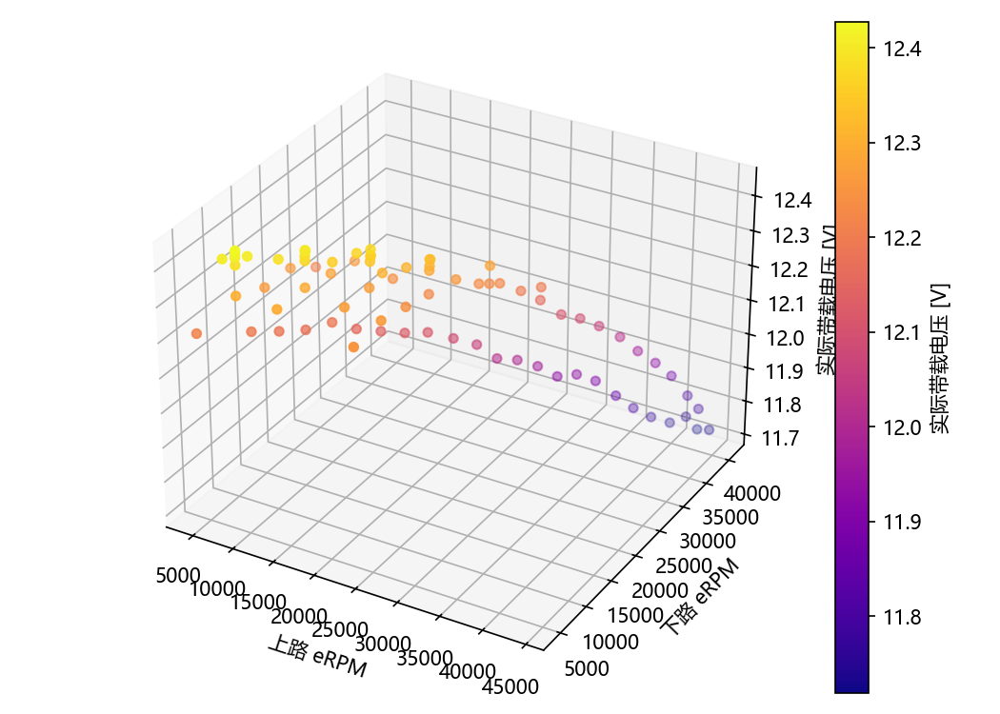

推力模型拟合与独立验证
验证状态：没有可用的独立留出预测，当前未验证。默认 5% 满量程 RMSE / 10% 满量程 P95 只是起步参考，不是飞行放行。
独立验证指标
不能预测或不可用的留出组：[{'group': 'run', 'value': '072b10edce6c', 'reason': 'voltage_layer_fit_unavailable', 'test_points': 11, 'explanation_zh': '该留出组无法由剩余训练组建立并预测。'}, {'group': 'run', 'value': '14309671afe4', 'reason': 'voltage_layer_fit_unavailable', 'test_points': 7, 'explanation_zh': '该留出组无法由剩余训练组建立并预测。'}, {'group': 'run', 'value': '3728e71beb6a', 'reason': 'voltage_layer_fit_unavailable', 'test_points': 15, 'explanation_zh': '该留出组无法由剩余训练组建立并预测。'}, {'group': 'run', 'value': 'b79239e1dcd7', 'reason': 'voltage_layer_fit_unavailable', 'test_points': 47, 'explanation_zh': '该留出组无法由剩余训练组建立并预测。'}, {'group': 'voltage_layer', 'value': 'layer:10.8', 'reason': 'voltage_layer_fit_unavailable', 'test_points': 47, 'explanation_zh': '该留出组无法由剩余训练组建立并预测。'}, {'group': 'voltage_layer', 'value': 'layer:11.5', 'reason': 'voltage_layer_fit_unavailable', 'test_points': 11, 'explanation_zh': '该留出组无法由剩余训练组建立并预测。'}, {'group': 'voltage_layer', 'value': 'layer:12.3', 'reason': 'voltage_layer_fit_unavailable', 'test_points': 22, 'explanation_zh': '该留出组无法由剩余训练组建立并预测。'}]
训练拟合（仅诊断）
覆盖 0/0 个点，覆盖比例 --。不能预测：{}
训练 RMSE -- N；训练误差不计入独立验证结论。
数据充分性
双驱动聚合稳态点 80，每个电压组最少 6 个唯一非零指令组合，实际电压覆盖组 3；整轮留出可用/拒绝 0/4，中间电压层留出可用 0；仍有 3 项缺口。
已采模式及聚合稳态点：{'dual': 80}
指令网格统计：{'status': 'available', 'meaning': 'Exact recorded command grid counts; not unique eRPM operating points.', 'groups': [{'mode': 'dual', 'voltage_group': 'layer:10.8', 'steady_points': 47, 'missing_command_points': 0, 'unique_command_combinations': 26, 'unique_nonzero_command_combinations': 26, 'command_combinations': [[2.0238095238095237, 2.0238095238095237], [4.0476190476190474, 4.0476190476190474], [5.9523809523809526, 5.9523809523809526], [7.976190476190476, 7.976190476190476], [7.976190476190477, 7.976190476190477], [10.0, 10.0], [12.023809523809524, 12.023809523809524], [14.047619047619047, 14.047619047619047], [15.952380952380954, 15.952380952380954], [17.976190476190474, 17.976190476190474], [20.0, 20.0], [22.023809523809526, 22.023809523809526], [24.047619047619047, 24.047619047619047], [25.952380952380953, 25.952380952380953], [27.976190476190474, 27.976190476190474], [30.0, 30.0], [32.023809523809526, 32.023809523809526], [34.04761904761905, 34.04761904761905], [35.95238095238095, 35.95238095238095], [37.976190476190474, 37.976190476190474], [40.0, 40.0], [42.023809523809526, 42.023809523809526], [44.04761904761905, 44.04761904761905], [45.95238095238095, 45.95238095238095], [47.976190476190474, 47.976190476190474], [50.0, 50.0]]}, {'mode': 'dual', 'voltage_group': 'layer:11.5', 'steady_points': 11, 'missing_command_points': 0, 'unique_command_combinations': 6, 'unique_nonzero_command_combinations': 6, 'command_combinations': [[5.0, 5.0], [10.0, 10.0], [15.0, 15.0], [20.0, 20.0], [25.0, 25.0], [30.0, 30.0]]}, {'mode': 'dual', 'voltage_group': 'layer:12.3', 'steady_points': 22, 'missing_command_points': 0, 'unique_command_combinations': 15, 'unique_nonzero_command_combinations': 15, 'command_combinations': [[5.0, 5.0], [5.0, 10.0], [5.0, 15.0], [5.0, 20.0], [10.0, 5.0], [10.0, 10.0], [10.0, 15.0], [10.0, 20.0], [15.0, 10.0], [15.0, 15.0], [15.0, 20.0], [20.0, 5.0], [20.0, 10.0], [20.0, 15.0], [20.0, 20.0]]}], 'missing_command_points': 0}。这是实际记录的指令组合数，不代表唯一 eRPM 工况；实际 eRPM/V 覆盖请看覆盖图。
起步建议：每个实际电量组约 25 个唯一非零指令组合，并另做独立验证轮。这是采集规划参考，不是硬数量门；零点/不转点另计，raw 行数、聚合稳态点和唯一指令组合互不等同。
- fewer_than_25_unique_nonzero_command_combinations_per_voltage_group_reference
- voltage_layer_fit_unavailable
- no_independent_holdout_validation
电压层留出限制
整层留出只允许在剩余电压层之间插值，不允许外推。因此最低和最高电压边界层通常不能通过 leave-one-layer-out 预测；边界层必须用同一电压层的独立重复轮次验证。只有两个电压层时不会执行整层留出；至少三个电压层才可能验证中间层。
eRPM 与实际带载电压覆盖

按实际带载电压分组的独立误差
| V | 点数 | RMSE N | MAE N | P95 N |
|---|---|---|---|---|
| 无独立留出电压分组误差。 | ||||
独立留出实测与预测明细
| 分组 | 组值 | run | segment | V | 实测 N | 预测 N | 残差 N |
|---|---|---|---|---|---|---|---|
| 没有可用的独立留出预测；训练拟合不能代替验证。 | |||||||
电池放电与采集建议
- 每个点使用实际带载电压；标签不能替代实测 V。
- 当前实现要求每个 run/标签内电压跨度受限，且相邻层实际范围分离；它不等于可以直接拟合任意连续放电曲线。
- 建议交错或正反扫描、缩短单组时间，并跨电量重复相同有效 eRPM 组合，以降低电压与转速共线。
元数据
{
"tool": "thrust_bench",
"plan_kind": "双桨共增",
"two_propellers_installed": true,
"motor_model": "AEO CRM2413-KV1300",
"prop_installation": "两片桨均安装",
"prop_spacing": "",
"speed_domain": "electrical_erpm",
"speed_source": "dshot_erpm",
"current_source": "dshot",
"esc_current_calibrated": false,
"current_resolution_a": 1.0,
"current_resolution_source": "TBENCH v1 whole-amp ESC current fields",
"snapshot_hz_requested": 15.0,
"fc_link_rate": {
"snapshot_hz": 15.0,
"estimated_wire_bytes_per_second": 3405,
"serial_budget_bytes_per_second": 3456,
"identity_status": "allowed",
"identity_reason": "STM32 application USB CDC VID:PID=0483:5740",
"confirmed_stm32_usb_cdc": true,
"device": "COM22",
"vid": 1155,
"pid": 22336,
"rate_policy": "serial_budget"
},
"channel_mapping_source": "firmware_snapshot",
"non_driven_propeller": "unknown_or_windmilling",
"scale_calibration_file": "原窗口内存标定快照",
"scale_calibration": {
"kind": "legacy_single_point_ratio",
"points": [
{
"raw": 239.0,
"grams": 240.0
}
],
"single_point_assumes_zero_origin": true
},
"notes": "电转速不除极对数；板总电流仅诊断，不用于电流/功耗拟合；双桨保持安装。",
"scale_settings_source": "pressure_rs485_gui",
"scale_port": "COM29",
"scale_baud": 9600,
"scale_address": 1,
"scale_channel": 1,
"scale_register": 0,
"scale_timeout_s": 0.25,
"schema_version": 2,
"created_at": "2026-09-22T03:30:56.420835-07:00",
"upper_channel": 2,
"lower_channel": 1,
"runs": [
{
"run_id": "14309671afe4",
"plan_name": "dual-common-高",
"mode": "dual",
"voltage_layer_label": "高",
"voltage_layer_target_v": 12.3,
"voltage_target_is_measured": false,
"loaded_voltage_min_v": 12.282,
"loaded_voltage_max_v": 12.479,
"loaded_voltage_samples": 99,
"completed": true,
"cancelled": false
},
{
"run_id": "072b10edce6c",
"plan_name": "dual-common-中",
"mode": "dual",
"voltage_layer_label": "中",
"voltage_layer_target_v": 11.5,
"voltage_target_is_measured": false,
"loaded_voltage_min_v": 12.138,
"loaded_voltage_max_v": 12.476,
"loaded_voltage_samples": 141,
"completed": true,
"cancelled": false
},
{
"run_id": "b79239e1dcd7",
"plan_name": "dual-common-低",
"mode": "dual",
"voltage_layer_label": "低",
"voltage_layer_target_v": 10.8,
"voltage_target_is_measured": false,
"loaded_voltage_min_v": 11.65,
"loaded_voltage_max_v": 12.471,
"loaded_voltage_samples": 559,
"completed": true,
"cancelled": false
},
{
"run_id": "3728e71beb6a",
"plan_name": "dual-grid-高",
"mode": "dual",
"voltage_layer_label": "高",
"voltage_layer_target_v": 12.3,
"voltage_target_is_measured": false,
"loaded_voltage_min_v": 12.173,
"loaded_voltage_max_v": 12.36,
"loaded_voltage_samples": 274,
"completed": true,
"cancelled": false
}
]
}